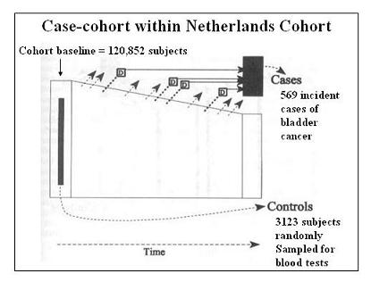

Case Control Study Example
Netherlands Cohort on Vitamin Intake
Lead Author(s): Jeff Martin, MD
Abstract from Zeegers
(Zeegers' abstract) below is an example from a study that used the case-cohort design.
" Summary in the Netherlands Cohort Study among 120.852 subjects aged 55-69 years at baseline (1996), the association between vitamins and carotenoids intake, vitamin supplement use, and bladder cancer incidence was examined. Exposure status was measured with a food-frequency questionnaire. After 6.3 years of follow-up, data from 550 cases and 3123 subcohort members were avilable for case cohort analysis. The age, sex, and smoking-adjusted relative risks (RRs) for retinol, vitamin E, alpha-carotene, beta-carotene, lutein, and zeaxanthin, and lycopene were 1.04, 0.98, 1.03, 0.99, 1.11, and 1.08, respectively comparing higest to lowest quintile of intake. Only vitamin C (RR: 0.81, 95% CI: 0.61-1.07, P-trend = 0.08) and beta-cryptoxanthin intake (RR: 0.74, 95% CI: 0.53-1.03, P-trend <0.01) were inversely associated with bladder cancer risk. The association with vitamin C disappeared after adjustment for beta-cryptoxanthin but not vice versa. The RRs for supplemental use of vitamin A, C or E compared to no use were around unity."
Study Parameters and Results
This is a very large study in the Netherlands of 120,852 persons followed since 1986.
- Since some laboratory assays of biological samples stored at baseline were needed, it was not feasible to test all 120,852 so a case-cohort sample of 3123 was used instead.
The authors report a relative risk, which is meant as a synonym for risk ratio.
- This is the correct measure of association for a case-cohort design.
This is an instance where a lot of baseline data and baseline biological samples collected for later testing can then be used for studying a number of outcomes just by determining the incidence of diagnoses for that outcome and testing only a random sample (here called a subcohort) of the baseline.
Graphic Netherlands Case Cohort Study
This is a graphic from the Zeegers study.

The efficiency of the design is seen in the need to do biological tests on a limited number of stored serum samples.
Study Variables
Questionnaire variables such as age and gender were captured on everyone in the cohort.
- For questionnaire variables the investigators could just use the entire cohort.
For biological measures,
- That would have been prohibitively expensive and inefficient
- There are far more controls than are needed for 569 cases (4 controls per case is usually considered about the maximum useful number since additional controls add very little to power).
References
Zeegers, M. P., Goldbohm, R. A., & van den Brandt, P. A. (2001). Are retinol, vitamin C, vitamin E, folate and carotenoids intake associated with bladder cancer risk? Results from the Netherlands Cohort Study. Br J Cancer, 85(7), 977-983.